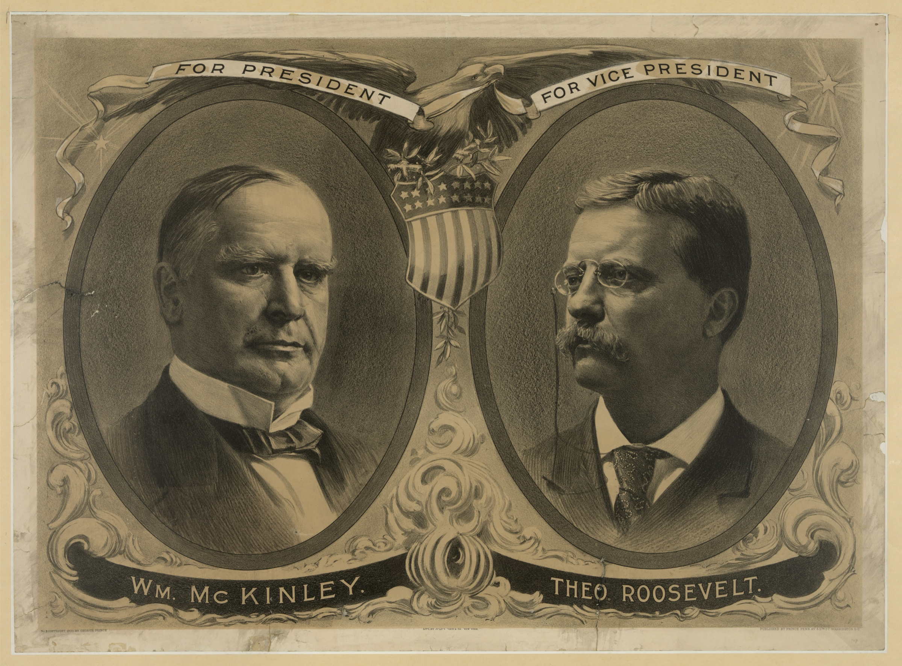

<template id="scene-16-cowboy-fs-template">
  <div data-composition-id="scene-16-cowboy-fs" data-width="1920" data-height="1080" data-duration="75" style="position:absolute; top:0; left:0; width:1920px; height:1080px; overflow:hidden; background-color:#0E0B08;">
    <style>
@font-face { font-family: "Source Serif 4"; src: url("../assets/fonts/SourceSerif4-Regular.woff2") format("woff2"); font-weight: 400; font-style: normal; }
@font-face { font-family: "Playfair Display"; src: url("../assets/fonts/PlayfairDisplay-Bold.woff2") format("woff2"); font-weight: 700; font-style: normal; }
@font-face { font-family: "Playfair Display"; src: url("../assets/fonts/PlayfairDisplay-Black.woff2") format("woff2"); font-weight: 900; font-style: normal; }
@font-face { font-family: "Roboto Mono"; src: url("../assets/fonts/RobotoMono-Regular.woff2") format("woff2"); font-weight: 400 700; font-style: normal; }

.fs-stage { position:absolute; inset:0; background:#0E0B08; font-family:"Source Serif 4",serif; color:#E8DEC8; overflow:hidden; }
.fs-stage * { box-sizing:border-box; }

.fs-chapter { position:absolute; inset:0; display:flex; flex-direction:column; align-items:center; justify-content:center; opacity:0; z-index:30; }
.fs-chapter .roman { font-family:"Playfair Display",serif; font-weight: 900; font-size:96px; color:#9A8E76; font-style:italic; letter-spacing: -0.025em; }
.fs-chapter .title { margin-top:18px; font-family:"Source Serif 4",serif; font-style:italic; font-size:56px; color:#E8DEC8; letter-spacing:0.04em; }

.fs-bg-photo { position:absolute; top:50%; left:50%; transform:translate(-50%,-50%); max-width:1400px; max-height:880px; opacity:0; z-index:5; filter:sepia(0.22) contrast(1.05) brightness(0.92) saturate(0.85); box-shadow:0 30px 80px rgba(0,0,0,0.6); border:1px solid rgba(200,117,51,0.35); }
.fs-bg-photo.full { max-width:1920px; max-height:1080px; }
.fs-bg-photo.left { left:30%; }
.fs-bg-photo.right { left:70%; }

.fs-strap { position:absolute; top:120px; left:50%; transform:translateX(-50%); font-family:"Roboto Mono",monospace; font-size:22px; font-weight:500; color:#9A8E76; letter-spacing: 0.2em; text-transform:uppercase; opacity:0; z-index:20; padding:12px 28px; border-top:1px solid #C87533; border-bottom:1px solid #C87533; }

.fs-year-strap { position:absolute; top:54px; left:64px; font-family:"Roboto Mono",monospace; font-size:28px; color:#9A8E76; letter-spacing:0.2em; opacity:0; z-index:20; }

.fs-name { position:absolute; top:48%; left:50%; transform:translate(-50%,-50%); text-align:center; font-family:"Playfair Display",serif; font-weight:900; line-height:0.95; letter-spacing:-0.02em; opacity:0; z-index:25; text-shadow:0 4px 20px rgba(0,0,0,0.5); }
.fs-name .accent { color:#C87533; }

.fs-hero { position:absolute; left:50%; transform:translateX(-50%); width:1600px; text-align:center; font-family:"Playfair Display",serif; font-weight:700; line-height:1.15; letter-spacing:-0.01em; color:#E8DEC8; opacity:0; z-index:22; }
.fs-hero.italic { font-family:"Source Serif 4",serif; font-style:italic; font-weight:400; }
.fs-hero.amber { color:#C87533; }
.fs-hero.blood { color:#C03A2C; }
.fs-hero.cream { color:#E8DEC8; }

.fs-verdict { position:absolute; bottom:200px; left:50%; transform:translateX(-50%); width:1700px; text-align:center; font-family:"Playfair Display",serif; font-weight:900; letter-spacing:-0.02em; opacity:0; z-index:26; }
.fs-verdict.amber { color:#C87533; }
.fs-verdict.cream { color:#E8DEC8; }
.fs-verdict.blood { color:#C03A2C; }
.fs-verdict.italic { font-family:"Source Serif 4",serif; font-style:italic; font-weight:400; }

.fs-mono { font-family:"Roboto Mono",monospace; font-variant-numeric:tabular-nums; }

.fs-ledger { position:absolute; left:50%; transform:translateX(-50%); width:1280px; padding:48px 64px; background:#E8DEC8; color:#0E0B08; font-family:"Roboto Mono",monospace; font-size:28px; line-height:1.7; opacity:0; z-index:24; box-shadow:0 30px 80px rgba(0,0,0,0.5); }
.fs-ledger .row { display:flex; justify-content:space-between; opacity:0; transform:translateY(8px); }
.fs-ledger .row .amt { font-weight:700; }
.fs-ledger .stamp { font-family:"Playfair Display",serif; font-weight: 700; color:#C03A2C; font-size:42px; opacity:0; transform:scale(1.05); }
.fs-ledger hr { border:none; border-top:1px solid #0E0B08; margin:14px 0; opacity:0; }

.fs-vignette { position:absolute; inset:0; pointer-events:none; z-index:90; background:radial-gradient(ellipse at center, rgba(14,11,8,0) 38%, rgba(14,11,8,0.55) 88%, rgba(14,11,8,0.85) 100%); opacity:1; }
.fs-grain { position:absolute; inset:-10%; pointer-events:none; z-index:89; opacity:0.10; background-image:repeating-radial-gradient(circle at 20% 30%, rgba(232,222,200,0.20) 0, rgba(232,222,200,0.20) 1px, transparent 1px, transparent 3px), repeating-radial-gradient(circle at 70% 80%, rgba(200,117,51,0.12) 0, rgba(200,117,51,0.12) 1px, transparent 1px, transparent 4px); mix-blend-mode:overlay; }
</style>
    <div class="fs-stage">
      <div class="fs-chapter" id="s16-chap"><div class="roman">XVI</div><div class="title">THE COWBOY</div></div>
      <!-- McKinley-Roosevelt 1900 campaign jugate poster (LoC LCCN 2003677507 / Julius Bien & Co. for George Prince, 1900; PD-US-expired).
           Positioned far-right under the timeline's right edge as a faint period prop;
           sized down so it doesn't fight the quote at @28s. -->
      
      <div class="fs-ledger" id="s16-timeline" style="top:25%;"><div style="font-family:Roboto Mono,monospace; font-size:22px; color:#9A8E76; letter-spacing:0.2em; margin-bottom:24px;">TIMELINE · 1897–1900</div><div class="row"><span>1897</span><span class="amt">Hanna takes the Senate seat, Ohio.</span></div><div class="row"><span>1899</span><span class="amt">Vice-President Hobart dies in office.</span></div><div class="row"><span>1900</span><span class="amt">Roosevelt forced onto McKinley&#x27;s re-election ticket.</span></div></div>
      <div class="fs-hero italic amber" id="s16-quote" style="top:44%; font-size:56px;  ">“Don&#x27;t any of you realize there&#x27;s only one life between this madman and the Presidency?”</div>
      <div class="fs-name" id="s16-tr" style="top:40%; font-size:128px;"><span class="first">THEODORE</span> <span class="last accent">ROOSEVELT</span></div>
      <div class="fs-hero italic cream" id="s16-tr-sub" style="top:55%; font-size:32px;  ">Governor of New York. War hero. Reformer. The madman.</div>
      <div class="fs-verdict blood" id="s16-v" style="font-size:72px;">They did not listen.</div>
      <div class="fs-grain"></div>
      <div class="fs-vignette"></div>
    </div>
    <script>
      window.__timelines = window.__timelines || {};
      const tl = gsap.timeline({ paused: true });

      // Scene 16 — SENATOR HANNA. AND THE COWBOY.  (75 s)
      // The 1900 McKinley-Roosevelt jugate poster appears under the timeline @1.5s,
      // a faint period prop establishing the ticket-pairing the timeline names.
      // It crossfades out at @28s as the Hanna quote takes over.
      gsap.set("#s16-poster", { xPercent: -50, yPercent: -50 });
      tl.fromTo("#s16-chap", { opacity: 0 }, { opacity: 1, duration: 0.6, ease: "power2.out" }, 0);
        tl.to("#s16-chap", { opacity: 0, duration: 0.5, ease: "power2.in" }, 1.2);
        tl.to("#s16-poster", { opacity: 0.55, duration: 1.2, ease: "power3.out" }, 1.5);
        tl.fromTo("#s16-poster", { scale: 0.95 }, { scale: 0.97, duration: 26.0, ease: "none" }, 1.5);
        tl.to("#s16-poster", { opacity: 0, duration: 0.8, ease: "power2.in" }, 27.5);
        tl.fromTo("#s16-timeline", { opacity: 0, y: 60 }, { opacity: 1, y: 0, duration: 1.0, ease: "power3.out" }, 1.2);
        tl.to("#s16-timeline .row", { opacity: 1, y: 0, duration: 0.5, ease: "power2.out", stagger: 0.4 }, 1.7999999999999998);
        tl.to("#s16-timeline", { opacity: 0, y: 60, duration: 0.8, ease: "power2.in" }, 28.0);
        tl.fromTo("#s16-quote", { opacity: 0, y: 30 }, { opacity: 1, y: 0, duration: 0.8, ease: "power3.out" }, 28.0);
        tl.to("#s16-quote", { opacity: 0, duration: 0.5, ease: "power2.in" }, 55.0);
        tl.set("#s16-tr", { opacity: 1 }, 58.0);
        tl.fromTo("#s16-tr .first", { opacity: 0, y: 40 }, { opacity: 1, y: 0, duration: 0.7, ease: "power3.out" }, 58.0);
        tl.fromTo("#s16-tr .last", { opacity: 0, y: 40 }, { opacity: 1, y: 0, duration: 0.7, ease: "power3.out" }, 58.4);
        tl.to("#s16-tr", { opacity: 0, duration: 0.6, ease: "power2.in" }, 75.0);
        tl.fromTo("#s16-tr-sub", { opacity: 0, y: 30 }, { opacity: 1, y: 0, duration: 0.8, ease: "power3.out" }, 58.5);
        tl.to("#s16-tr-sub", { opacity: 0, duration: 0.5, ease: "power2.in" }, 75.0);
        tl.fromTo("#s16-v", { opacity: 0, y: 30 }, { opacity: 1, y: 0, duration: 0.8, ease: "power3.out" }, 70.0);
        tl.to("#s16-v", { opacity: 0, duration: 0.5, ease: "power2.in" }, 75.0);

      window.__timelines["scene-16-cowboy-fs"] = tl;
    </script>
  </div>
</template>
